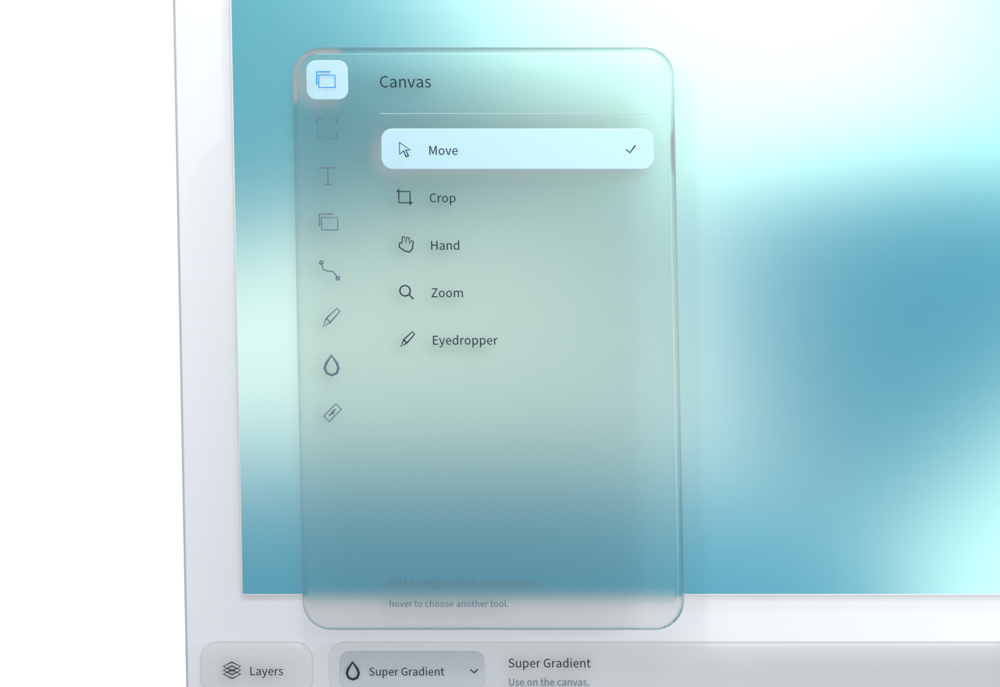
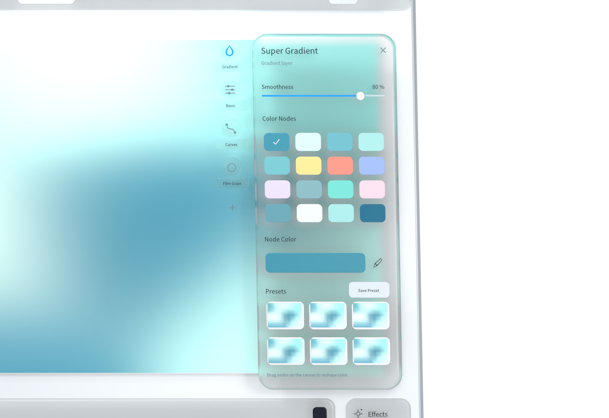
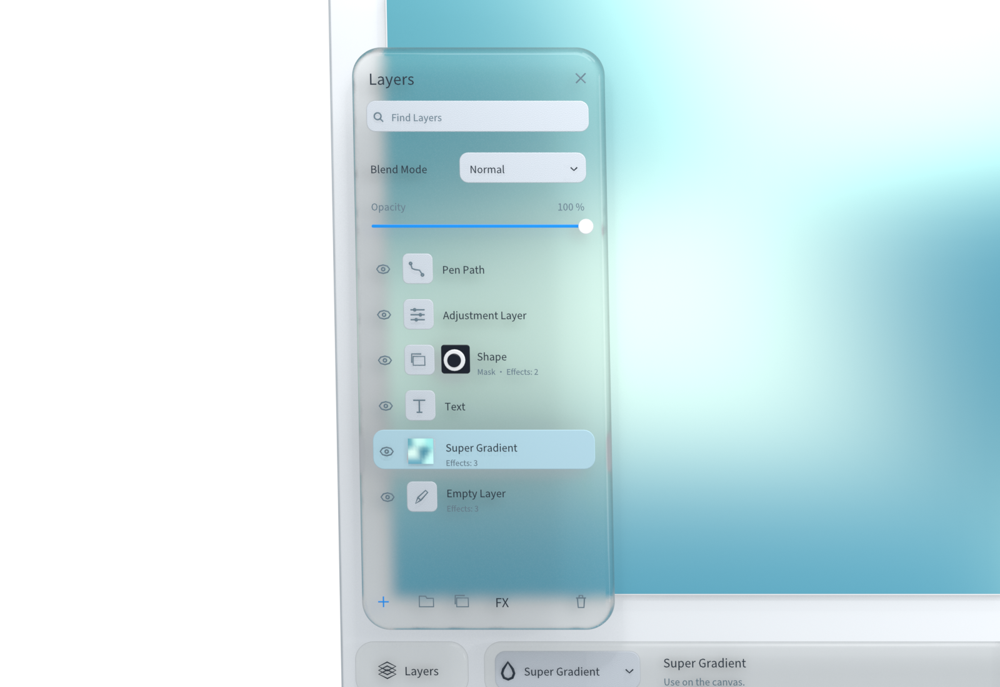
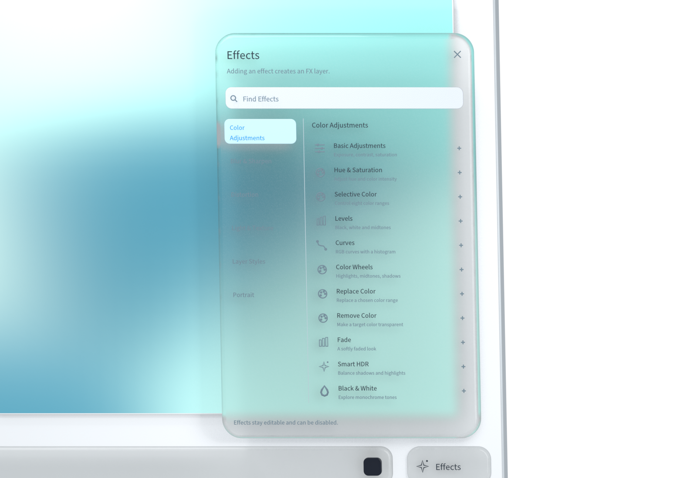
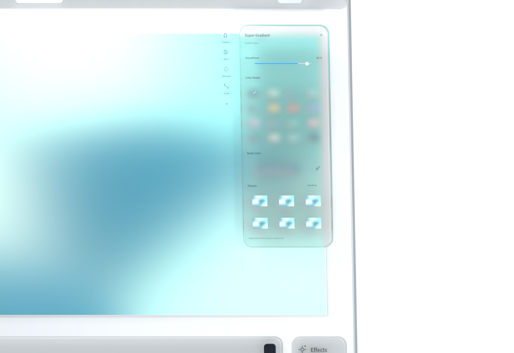
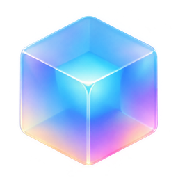

Tools within reach
Start where your intuition leads.
Tools are grouped by the task at hand, from moving and cropping to brushes and paths. Open the menu, choose a tool, and begin with the next mark.

FREE · OPEN SOURCE · LOCAL
Free. Open source. Made for artistic intuition.

From a passing thought to your own expression.
Scroll to explore ↓iMage Pro
You do not need every step planned out. Make the first mark, then follow your intuition. A simple beginning can become something rich.
Follow the idea. Keep scrolling.
Tools within reach
Tools are grouped by the task at hand, from moving and cropping to brushes and paths. Open the menu, choose a tool, and begin with the next mark.

Color in motion
Move Super Gradient nodes to explore how colors flow together. Save combinations as presets and return to them when the next idea arrives.

Room to explore
Organize your composition with layers and explore changes with masks. Try another direction, then return to the version you love.

Effects to explore
Explore adjustments, light and texture in clear categories. Combine effects, try a new direction, and find an expression that feels like yours.

Order as expression
Effects process your image in sequence. Drag to rearrange them and explore different results with the same set of effects.

On your Mac
Images and projects are processed locally. No account, advertising trackers or usage analytics, and no automatic upload of your creative work.
Read the privacy policy ↗Creativity for everyone
Free to use, with source code under Apache-2.0. Read, modify and contribute. Third-party components and brand artwork retain their own terms.
GitHub ↗中文 · ENGLISH · 日本語 · 한국어
Simplified Chinese, English, Korean and Japanese. Switch the interface language in app settings.
Monthly Inspiration
A monthly theme and a selection of work worth seeing. Homepage features, artist credits and portfolio links celebrate creativity without cash prizes.
About Monthly Inspiration ↗Featured work · Artist credit · Digital selection card

Make room for your next idea
Free to use. No account needed.
Download Mac PreviewApple Silicon · macOS 14+. This preview is not Apple-notarized. See the release page for installation instructions. GitHub Releases ↗